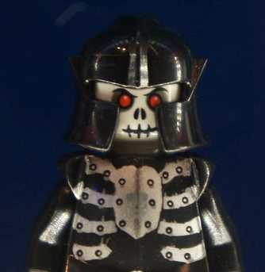

"Vampires and street whores both know a thing about darkness. And while they might not be wrong, they both suck for a living."
Morden-Bezron, the Dark Were it not for his not quite sickly pallor and captivating pale blue eyes, Bezron migh not be noticeable from any other of Waterdeep aristocracy. Standing six foot tall, and just a raven's feather under 200lbs, Bezron is tall and fit, with an easy gait and remarkably unassuming air for one of noble birth. His voice is tranquil and smooth, and many of the ladies, both of court and of the night, have found his timbre enveloping. A lush renown for his love of brothels and the wives and daughters of other nobility, he has a reputation for his prowess in bed. Were he not of such a prominent and politically connected house, it is conceivable his myriad exploits would have condemned him to the fringes of Waterdhavian polite society. Few suspect the truth of the fun loving, charming son of House Belabranta. Conceived by dark magic, and born from a lifeless womb, Amelia Kulenov, High Duchess of Aglarond and Matriarch vampiress, gave birth both to Bezron and his twin brother, Koheen, in the city of Gloomwrought in the Shadowfell. Tainted by the darkness of that plane of existence, he was brought immediately to his father in the Prime, and raised there. Traveling back and forth between noble courts, he would take his summers in Waterdeep, and his winters in Aglarond. In Waterdeep, he was schooled in diplomacy and educated as a noble. His father saw him trained in arms, but also in the family business: raining and training griffons. In Aglarond, his mothers court, he was schooled in more subtle skills, and was promptly introduced to the pleasures of the flesh when he came of age. It was here he was visited by a “friend” of his mother, Yezen Trueweave. Lord of the First House of the Parliament of Shadows, Yezen knew early of Bezrons nature. As a high ranking figure within the Tenebrous Cabal, the organization of mysterious users of shadow magic, Yezen took Bezron to the Bleak Academy, where he began his instruction in shadow magic. As time went on, courtly intrigues unfolded all around him. Plots and power plays inevitably saw him drawing upon his heritages powers and upon the powers he had learned from the Bleak Academy. It was during these tumultuous times that he was shocked by the knowledge of the existence of his twin brother, Koheen. After resolving some pressing issues concerning Koheen and his matters with the Shadowmasters, the two became close, sharing many passions and aims. Today, Bezron has retired his position at the Parliament of Shadows to pursue his goals both in Waterdeep and Aglarond, running House Belabranta and working for his mother, High Duchess Amelia.